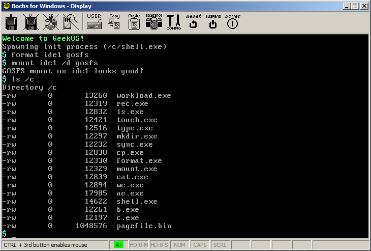

Updated:
December 7th: Added pipe testing document
Due Dates:
Tuesday,
December 5th by 11:59 PM: Implementation of Console
Pseudo-Filesystem
Tuesday,
December 12th by 11:59 PM: Implementation of Pipe
Pseudo-Filesystem
In class we have discussed how the concepts of files and directories
can be supported by the operating system kernel by managing storage on
a block device such as a hard drive. File data can be read and
written using read and write system calls.
Most operating systems, including Unix and Windows, allow the same
read and write system calls to be used to read data from and write data
to hardware devices and inter-process communication mechanisms.
The idea of using a common I/O mechanism for files, devices, and
inter-process communication is called I/O
polymorphism.
In this assignment you will implement the read, write, and clone
virtual filesystem methods for a console device and a pipe IPC
mechanism.
Recall that a virtual filesystem
is essentially an object-oriented class hierarchy defining different
implementations of files. Each disk filesystem will have its own
file implementation: in GeekOS, the two disk filesystems are PFAT and
GOSFS: you can see the implementation of these filesystems in the
sourcefiles pfat.c and gosfs.c.
The virtual methods defined for File objects are defined by the
File_Ops struct in <geekos/vfs.h>:
/* Operations that can be performed on a File. */
struct File_Ops {
int (*FStat)(struct File *file, struct VFS_File_Stat *stat);
int (*Read)(struct File *file, void *buf, ulong_t numBytes);
int (*Write)(struct File *file, void *buf, ulong_t numBytes);
int (*Seek)(struct File *file, ulong_t pos);
int (*Close)(struct File *file);
int (*Read_Entry)(struct File *dir, struct VFS_Dir_Entry *entry);
int (*Clone)(struct File *file, struct File **pClone);
};
The FStat operation copies
meta-information about a file, such as its size, into a VFS_File_Stat
struct.
The Read operation copies
data file the file into the given buffer. Up to numBytes worth of
data are copied. The number of bytes actually read (which may be
less than the number of bytes requested) is returned.
The Write operation copies
data from the given buffer into the file. The number of bytes
actually written (which may be less than the number of bytes requested)
is returned.
The Seek operation changes
the current file position to the one given.
The Close operation is
called when a process closes a file.
The Read_Entry operation is
called to read the next directory entry from an open directory.
(Recall that directories and files are similar, and that using a common
data structure to represent them is a common implementation technique.)
The Clone operation is
called when a parent process spawns a child process. Each open
file in the parent process's open file table is cloned, and the cloned file is
registered in the child's open file table. A clone is simple a
new File object that is attached to the same data source as the
original File object. File cloning (also known as duping in Unix)
explains why when you create a child process, it uses the same keyboard
and screen devices as its parent. Cloning is also how a Unix
shell creates chains of processes connected by pipes: the parent shell
creates the pipes, and the child
processes inherit the cloned pipe file descriptors.
Your first task is to implement a File object and associated data
structures to implement a console
device. A console device is simply a keyboard and a text
screen. Reading from a console reads from the keyboard, and
writing to a console writes to the screen. In GeekOS, the
functions supporting the console device are in the source file consfs.c.
You will need to implement the Console_Read,
Console_Write, and Console_Close functions, which
implement the Read, Write, and Close VFS operations, respectively.
Things to keep in mind:
If the user types a carriage return
character ('\r'), Console_Read
should place a newline character (\n') in the caller's buffer.
This is known as "cooking" the input.
It is perfectly fine for an
implementation of the Read
operation to return fewer than the number of bytes of data requested.
You can use the Put_Char function (defined in <geekos/screen.h> to write a
single character to the screen.
Console_Close
doesn't really need to do anything: it can just return 0.
Once you have implemented these functions, you should be able to
boot GeekOS in Bochs:

Verify that you can type the commands shown above, and that you get
the same output in response.
Your second task is to implement pipes, which are a unidirectional
inter-process communication mechanism. You can think of a pipe as
a bounded buffer of bytes. The code to implement pipes is a
producer/consumer problem.
The source file pipefs.c
contains the functions for creating, reading from, writing to, cloning,
and closing File objects
representing pipes.
Hints:
Pipes are created in a parent process as
a pair of File objects: one to
read from the pipe and another to write to the pipe. The two Files will share a common pipe buffer data structure.
The pipe buffer should contain a buffer and a set of variables needed
to solve the producer/consumer problem. (E.g., reader and writer
offsets, a mutex and condition variable for synchronization, etc.)
The Clone
virtual filesystem operation is used to duplicate a File object so it can be used by a
child process. A cloned pipe File
object will have a pointer to the same pipe buffer data structure as
the pipe File object from
which it was cloned. You should implement Pipe_Clone by incrementing the
reference count of the pipe buffer data structure.
The Pipe_Close
function (which is the implementation of the Close virtual filesystem operation)
should decrease the reference count of the pipe buffer, destroying the
pipe buffer when the last File
object containing a pointer to it is closed.
There are two special conditions you
should consider:
Pipe_Read
must be able to detect when the last process that has the pipe open for
writing closes the pipe.
Pipe_Write
must be able to detect when the last process that has the pipe open for
reading closes the pipe.
In each of these cases, the call to
Pipe_Read or Pipe_Write should return immediately. Otherwise,
they run the risks of suspending the calling process forever.
Please see the following document, which describes how to test your
pipe implementation:
Download project6a.zip.
For the first deadline, you only need to have the console pseudo
filesystem implemented. Submit this work as "Assignment 6, Part
1" in the My YCP Inbox.
For the second deadline, you need to have both the console and pipe pseudo filesystems implemented. Submit this work as "Assignment 6, Part 2" in My YCP.